Installing_Linux_on_Android
～Android平台上chroot的使用纪要～
准备
- Android固件等（若系统运行正常则无需此项）
- 拥有一定的Linux系统操作能力
- 对Android系统有一定了解
- Magisk安装包
- LinuxDeploy安装包
- 适用于设备的TWRP Recovery镜像
恢复Android系统（若系统运行正常则跳过）
以Arch Linux演示。
采用高通EDL模式恢复，在PC上通过git命令克隆qdl仓库：
git clone git@github.com:andersson/qdl.git
并使用make编译。然后使用qdl：
sudo ./qdl --include prog_emmc_firehose_8953_ddr.mbn rawprogram_unsparse_upgrade.xml patch0.xml
此时断开设备电源，同时短接如图所示两触点，并插入连接线，使设备进入EDL模式并恢复。
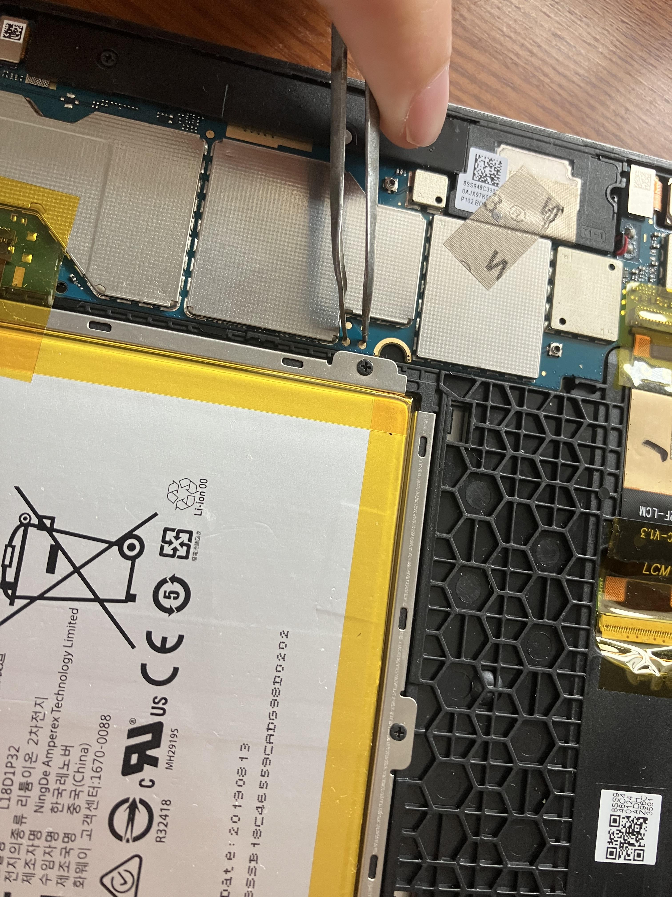
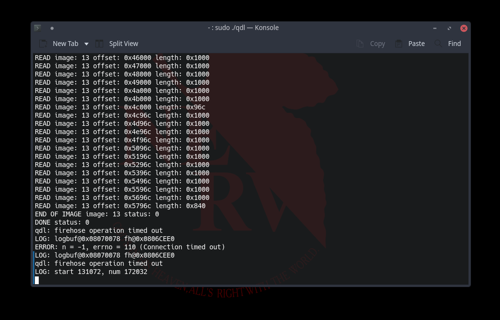
安装TWRP-Recovery并载入root
重启设备至fastboot模式，使用如下命令安装TWRP（安装分区按需调整，如华为设备等将内核与ramdisk拆分的设备可能为recovery_ramdisk）
fastboot flash recovery recovery.img
然后重启进入recovery模式。
通过mtp功能或传输介质将Magisk安装包下载到设备中，并重命名apk为zip（新版的Magisk将apk与twrp用zip合二为一）。再通过twrp安装Magisk，随后重启进去android系统，安装对应的apk，root权限获取。
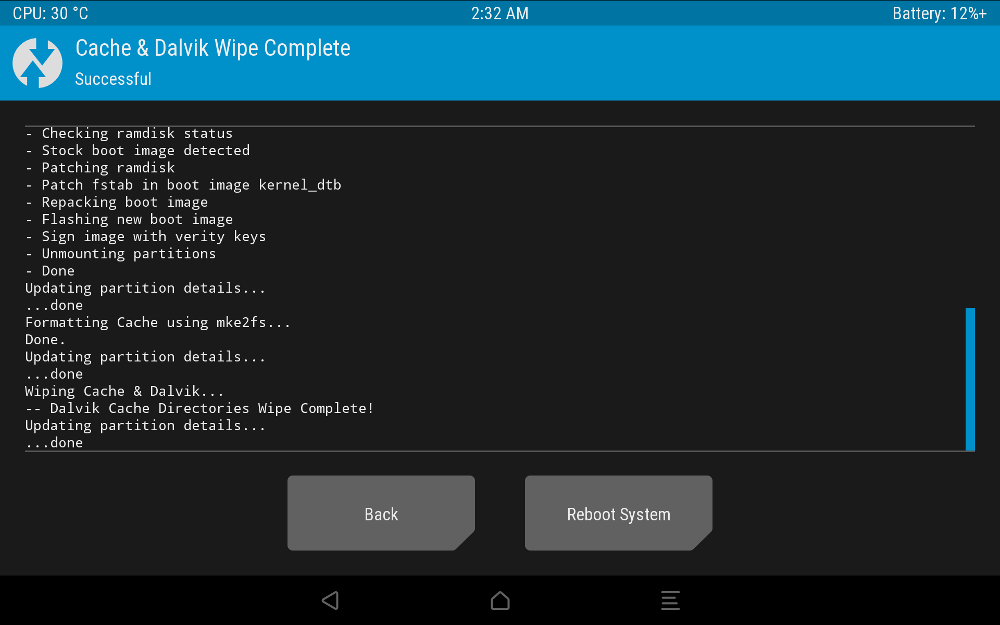
安装Linux系统
安装LinuxDeploy应用程式并进入右上角设置选项。按照需要进行设置，在此选择Kali Linux发行版，由于Kali Linux同Arch Linux一样为滚动更新，与Ubuntu等不同，故可以时刻使操作系统保持最新，而其中Ubuntu仅支持到Ubuntu Bionic，无法获取最新版本（最新版本安装时需要用到zstd等工具）。故此处安装Kali Linux。
在设置中，将"Souce Path"更改为本地化的镜像源可以显著提高安装速度。另，“Installation Type”可按需选择，此处选择"Directory"，即安装到本地目录，需要注意的是，该目录"Install Path"需要ext4文件系统，并支持权限更改，故/sdcard中不可安装，而/data/local/是一个很好的选择。
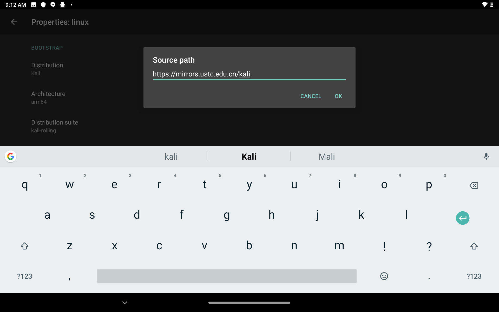
往下“Username”与“Password”、“Localization”按需更改。注意“MOUNTS”选项，意为挂载，可将android文件系统挂载至Linux中，勾选“Enable”，进入“Mount Points”中，此处习惯性地将/sdcard/挂载入Linux中的/sdcard/，方便传输数据。
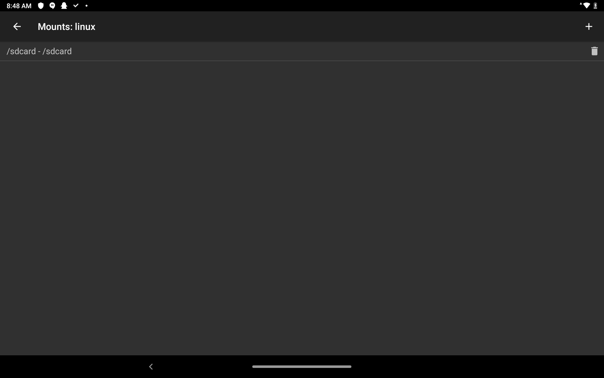
再往下，ssh与GUI可按需启用，GUI中可以将桌面环境更换为自己习惯使用的，此处选择Xfce。
设置完成后，返回主界面，点击右上角选项中的“Install”，并授予root权限，开始安装。
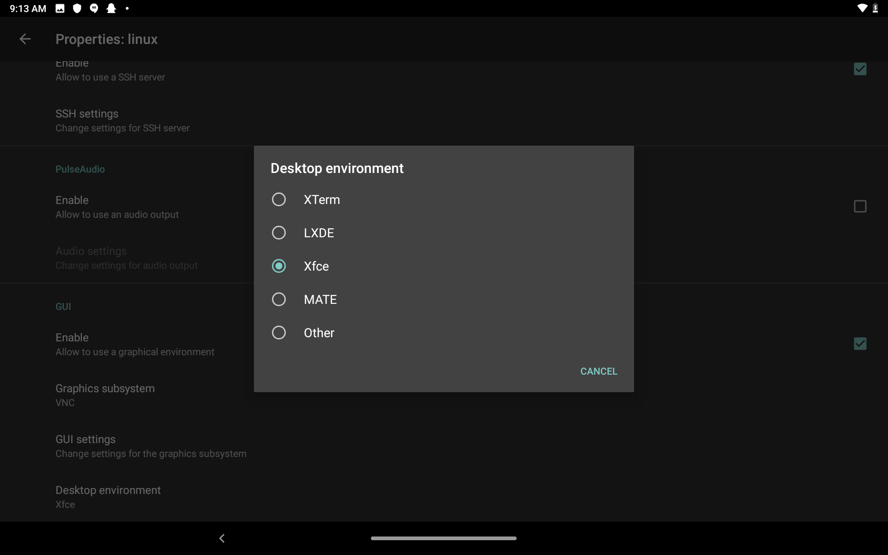
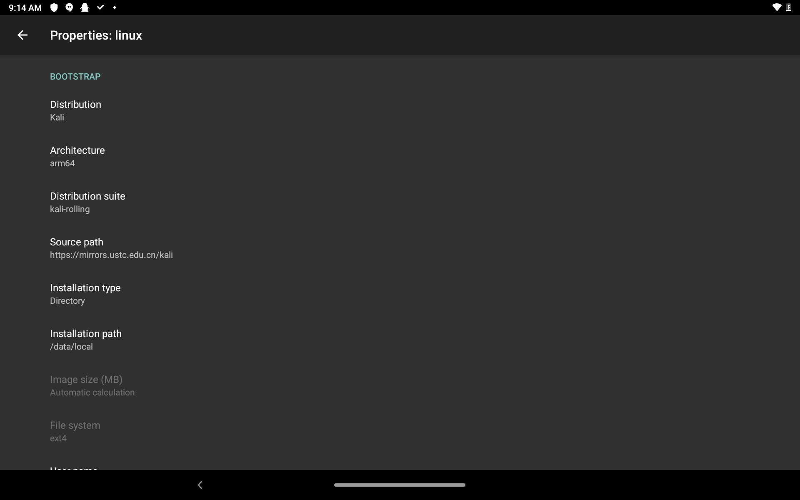
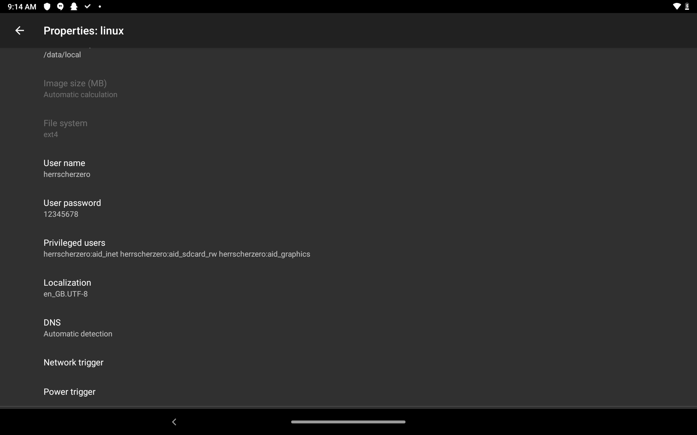
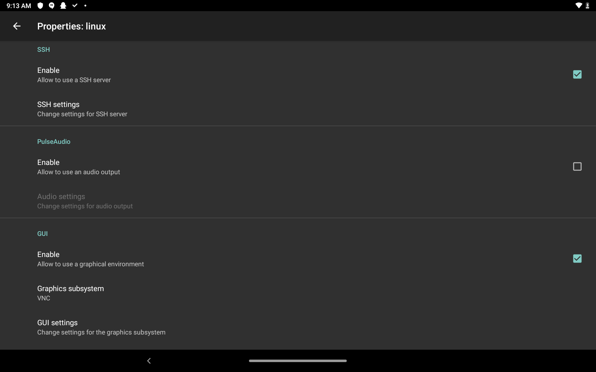
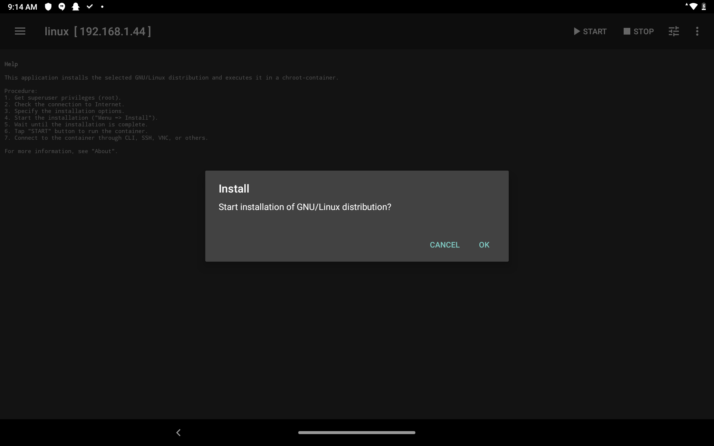
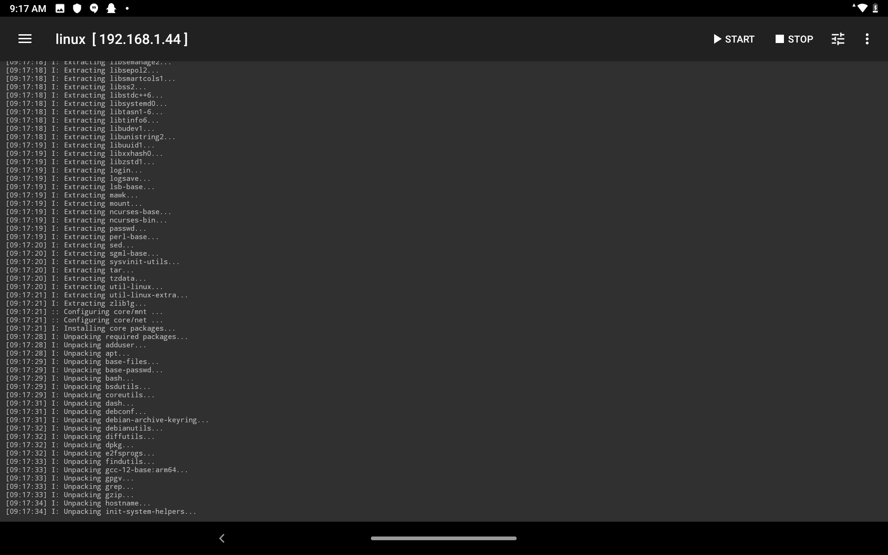
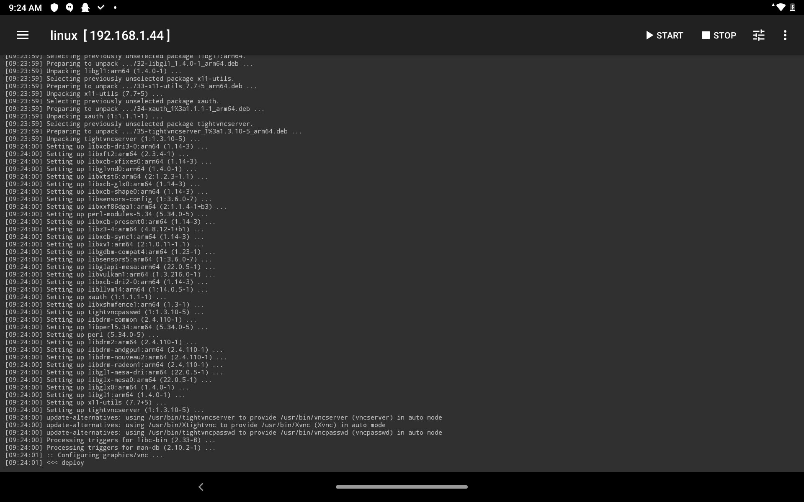
必要的设置
安装完成后，点击右上角Start挂载并运行Linux。
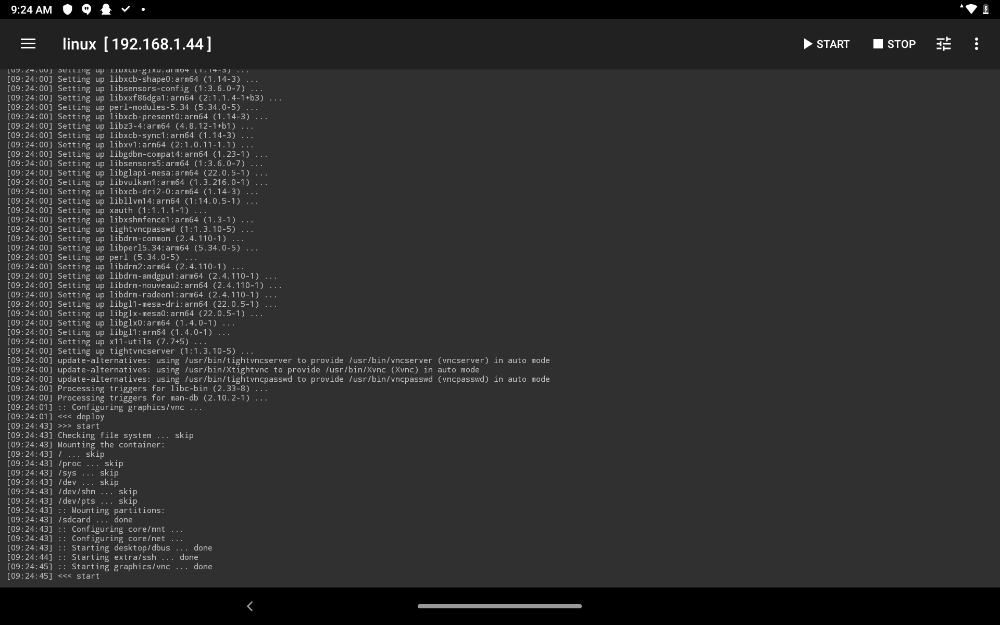
使用ssh访问该设备，并用密码登录。此时，默认shell为sh，须更换为bash方便操作，使用
chsh
并按需操作即可。莫忘修改root密码。
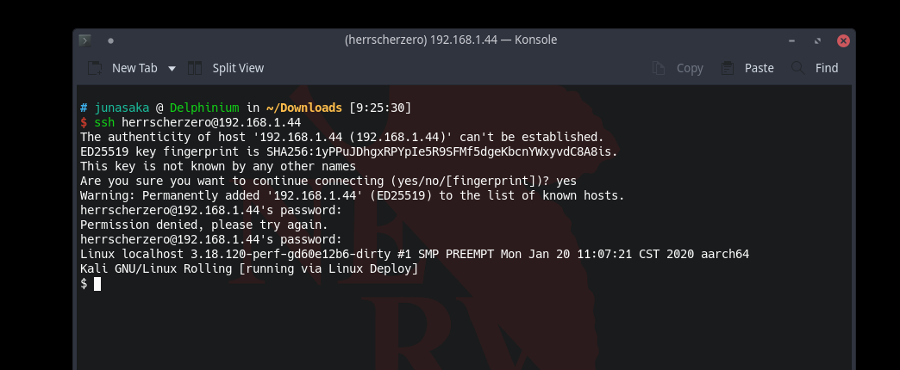
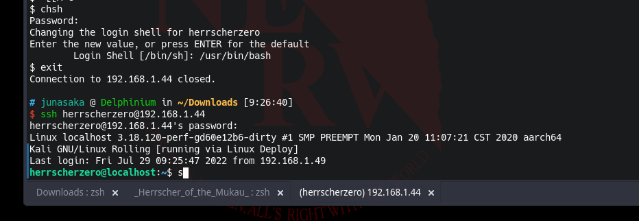
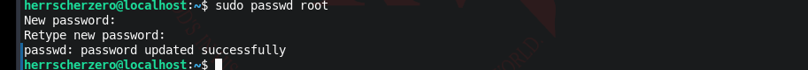
同样，使用VNC客户端可访问到该设备。
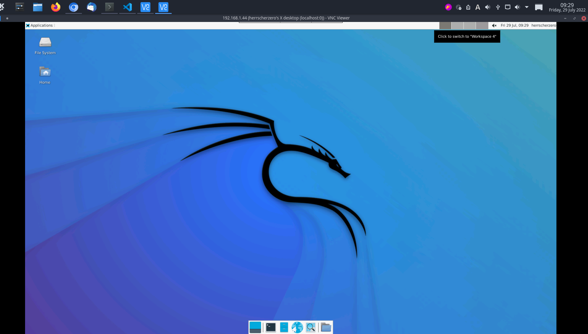
Jun ASAKA
二〇二二年七月初一 金曜日